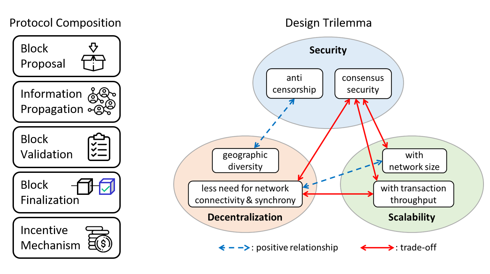
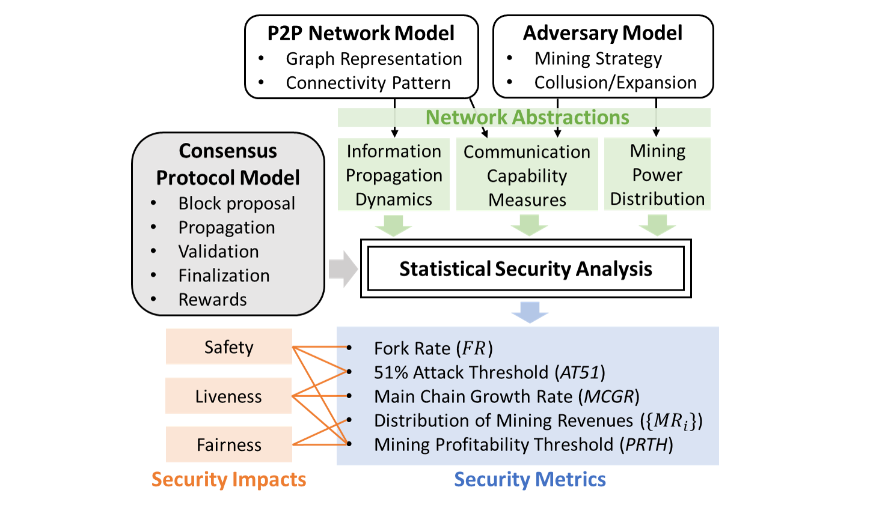

Understanding Blockchain Consensus and Security

Fundamentals of Blockchain Consensus
Consensus protocol is the crucial component underpinning the security of a blockchain system. It enables decentralized, mutually distrustful parties to agree on a unified transaction history without the help of a central authority. In a comprehensive survey & tutorial, we reviewed a wide range of consensus protocols for blockchain and distributed computing systems, provided a taxonomy for blockchain consensus protocols based on a novel five-component framework, and performed qualitative analyses on the security and scalability of each class of protocols. We summarized some of the key principles for designing a blockchain consensus protocol and identified the essential tradeoffs around the security-decentralization-scalability trilemma.

Analyzing Nakamoto Consensus from a Networking Perspective
Prior wisdom states that the security of Nakamoto Consensus, the protocol used by Bitcoin, relies on the honest majority assumption that all networked nodes can maintain one consistent and irreversible blockchain ledger if the majority computing power are honest (i.e., resisting the “51% attack”). This assumption, however, overlooks the practical aspect that the heterogeneous connectivity pattern of the underlying P2P network can also have profound impact on the consensus dynamics and ultimately the consensus security. In particular, a well-connected node has a greater chance to win a fork race than those who are sparsely connected. Eyeing on this gap, we developed an analytical model to quantify the impact of P2P network connectivity on the safety and fairness of Nakamoto Consensus. Under different adversarial cases, this model can capture a node's "communication capability" in a fork, i.e., winning chance for a fork race, and predict key security metrics, including long-term fork rate which reveals the actual “51% attack” threshold (safety) and the mining revenue distribution among all nodes (fairness).
Proposed Work
◾ Extend the current model-based analysis to a more practical case where there is only partial measurement on the P2P network topology.
◾ Cross-layer analysis on the centralization risk and security vulnerabilities of different functional layers of a blockchain system (e.g., network, consensus, incentive, cryptography, software, etc.) in the aim of identifying security bottlenecks.
◾ To develop efficient, robust consensus mechanisms that are adaptive to variable network/synchrony profiles, for instance, to attain the highest possible transaction throughput by making near-full use of each node's bandwitdh while guaranteeing the minimum satefy amid temporary network partitions.